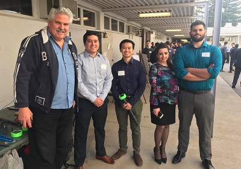
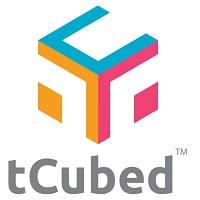
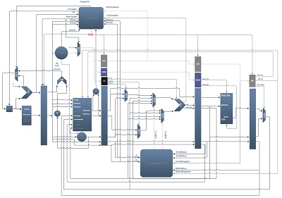

A year long project aimed towards water conservation. The project consisted of the creation of a solar powered sensor and controller combo, that communicated with each other using LoRaWAN. Weekly meetings were held with a team-assigned instructor, where the project was structured using the Kanban, agile methodology. My role in the group was that of a full stack developer,
Setup the first iteration of the MySQL database on the raspberry pi controller . On the second iteration, I setup the relational cloud database and configured the data transmission from the controller.
Normalized data and structured dataframes before uploading data to database using python
Created an Android mobile application which implemented user authentication, and visualized snapshots of the data through filters that included hourly changes, soil quality, and temperature.

A game of strategy and logic on a cube for mobile devices. Players strategically move their opponents around the cube while winning on three faces themselves. My responsibilities included designing and implementing the game mechanics and user interface on the Unity Platform for the Minimum Viable Product
Programmed the score tracking, cube animations, rotation, game logic, and touch dynamics.
Implemented a simple test user interface which allowed the player to pause, restart, and check the rules.
Refactored code which increased the response time, and allowed the backend design to be implemented for player vs. player.

A 5-stage pipelined datapath modeled after the MIPS Architecture, built using Verilog. The goal of this Two-Person project was to learn about Computer Architecture and Organization, and implement a working design. Alongside my partner, we designed the datapath in an incrimental manner. Starting with a single-cycle datapath, the stage buffers, Hazard unit, and Forwarding unit were subsequently added.
Analysis of the Instruction Set Architecture and truth tables to determine logic design for the initial datapath.
Programmed the stages that included the Instruction Decode, Execution, and Memory Access. My partner handled the Instruction Fetch, Write-back, and buffers.
Implemented the additional design and programming for the Forwarding and Hazard detection Units.
A web application aimed to help Instructors to efficiently track attendance across multiple classes. The user-friendly interface allows students to sign in with an instructor-provided passcode. The application includes additional features to encourage student integrity. Built using the Google maps, and spreadsheets API’s.
Programmed the code which autogenerated and authenticated a daily instructor-provided passcode.
Aided in incorporating the Google Maps API to track a students’ login location to encourage student integrity.
Incorporated google spreadsheets to create student directory.
A plan for the arrival of over 1800 students to the residence halls. This initiative was an answer to student congestion that would occur every year, the weekend before school began. The arrivals were dispersed over a 3 day period which allowed for less bottlenecking, and the added organiztion of volunteers.
Generated sql queries to create student reports for batch jobs
Created SharePoint workflows which helped organize students into their respective residence halls based on room location, arrival date, times.
Helped create and supervised the implementation of a web based student arrival, sign-in form on move-in day.
Led web committee through the process of creating and managing a website
Coordinated volunteers and electronics in the first annual S.T.E.M Olympics. Oversaw weekly study sessions.
Oversaw the maintenance of microphones, video projectors, and the sign-in Web App. Alongside Logistics, I helped organize staff and tech for the professional/student sign-in, multiple seminars and competitions, and the closing ceremony.